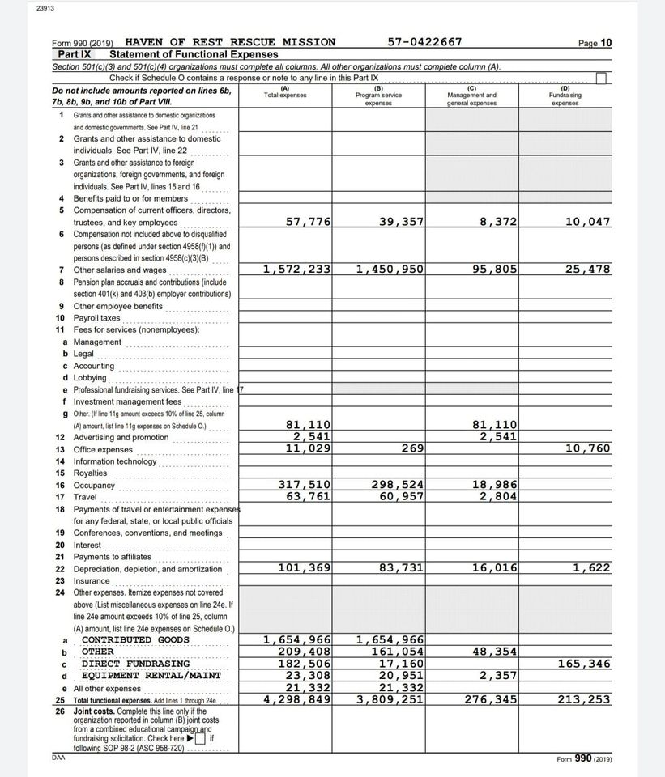

Mobile uploads
There is a Terry Pluto article going around right now about whether or not you should give money to panhandlers.
This is a topic of debate because people often times judge how panhandlers spend their money. In the article The Haven of Rest says that you should just give your money to charities.
In light of the fact that we judge panhandlers for how they spend their money I wanted to show you the 2019 expense category of the Haven of Rest.
Most of their money is spent on salaries and wages. It is not spent on food or shelter. It is spent on salaries.
I don't judge a panhandler for how they spend their money and I don't judge the Haven of Rest for how they spend their money.
But the article WAS judging panhandlers for how they spend their money and not judging how charities spend their money.
I wanted to even the playing field by showing you this tax form from The Haven of Rest.